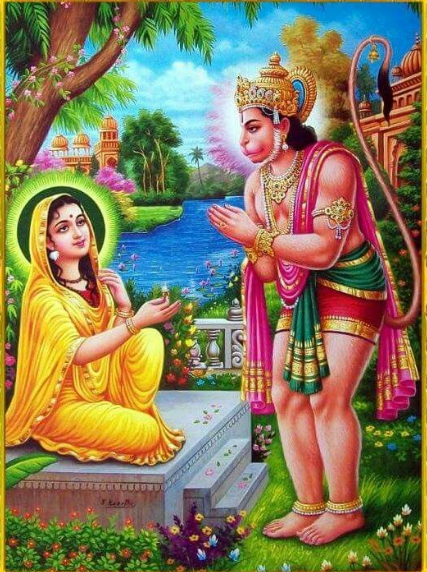

Sundarakanda Sarga 45
॥ॐ॥
मनोजवं मारुततुल्यवेगं जितेन्द्रियं बुद्धिमतां वरिष्ठम्।
वातात्मजं वानरयूथमुख्यं श्रीरामदूतं शरणं प्रपद्ये॥
असाध्यसाधकस्वामिन् असाध्यं तव किं वद।
रामदूत कृपासिन्धो मत्कार्यं साधय प्रभो॥
Sundarakanda Sarga 45
Hanuman kills the seven sons of Ravana's chief minister
(Benefit: Winning over one’s enemies)

(17 Shlokas)
ततस्ते राक्षसेन्द्रेण चोदिता मन्त्रिणस्सुताः।
निर्ययुर्भवनात्तस्मात् सप्तसप्तार्चिवर्चसः॥5.45.1॥
Word-by-word meaning: ततः then, ते those, राक्षस-इन्द्रेण by the lord of the rakshasas (Ravana), चोदिता having been urged, मन्त्रिणः सुताः the sons of the ministers, निर्ययुः went forth, भवनात् from the palace, तस्मात् from that, सप्त seven, सप्त-अर्चि-वर्चसः glowing as seven flames of fire
Anvay: ततः राक्षसेन्द्रेण चोदिता सप्तार्चिवर्चसः ते सप्त मन्त्रिणः सुताः तस्मात् भवनात् निर्ययुः।
Simple meaning: Then, urged by the lord of the rakshasas, the seven sons of the minister, glowing like seven flames of fire, proceeded forth from that palace.
महाबलपरीवारा धनुष्मन्तो महाबलाः।
कृतास्त्रास्त्रविदां श्रेष्ठाः परस्परजयैषिणः॥5.45.2॥
Word-by-word meaning: महा-बल-परीवाराः surrounded by mighty attendants, धनुष्मन्तः bearing bows, महा-बलाः very strong, कृत-अस्त्राः trained in weapons, अस्त्रविदाम् of those skilled in missiles, श्रेष्ठाः the foremost, परस्पर-जय-एषिणः desirous of conquering one another
Anvay: महाबलाः धनुष्मन्तः महाबलपरीवाराः कृतास्त्राः अस्त्रविदां श्रेष्ठाः परस्परजयैषिणः।
Simple meaning: They were mighty warriors, surrounded by strong attendants, carrying bows, trained in the use of weapons, foremost among masters of missiles, and eager to outdo one another in valor.
हेमजालपरिक्षिप्तैर्ध्वजवद्भिः पताकिभिः।
तोयदस्वननिर्घोषैर्वाजियुक्तैर्महारथैः॥5.45.3॥
Word-by-word meaning: हेम-जाल-परिक्षिप्तैः enclosed with golden meshes, ध्वजवद्भिः bearing banners, पताकिभिः with flags, तोयद-स्वन-निर्घोषैः resounding like the roar of clouds, वाजि-युक्तैः drawn by horses, महा-रथैः by great chariots
Anvay: हेमजालपरिक्षिप्तैः ध्वजवद्भिः पताकिभिः तोयदस्वननिर्घोषैः वाजियुक्तैः महारथैः (ते मन्त्रिपुत्राः निर्ययुः)।
Simple meaning: They came forth in great chariots, enclosed with golden meshes, adorned with banners and flags, drawn by horses, and resounding like the deep roar of clouds.
तप्तकाञ्चनचित्राणि चापान्यमितविक्रमाः।
विस्फारयन्तस्संहृष्टास्तडित्वन्त इवाम्बुदाः॥5.45.4॥
Word-by-word meaning: तप्त-काञ्चन-चित्राणि adorned with designs of molten gold, चापानि bows, अमित-विक्रमाः of immeasurable prowess, विस्फारयन्तः stringing and stretching, संहृष्टाः delighted, तडित्वन्तः flashing with lightning, इव like, अम्बुदाः clouds
Anvay: अमितविक्रमाः संहृष्टाः तप्तकाञ्चनचित्राणि चापानि विस्फारयन्तः – तडित्वन्तः अम्बुदाः इव – (बभूवुः)।
Simple meaning: Those warriors of immeasurable valor, delighted, stretched their bows adorned with golden designs, appearing like clouds flashing with lightning.
जनन्यस्तु ततस्तेषां विदित्वा किङ्करान् हतान्।
बभूवुश्शोकसम्भ्रान्तास्सबान्धवसुहृज्जनाः॥5.45.5॥
Word-by-word meaning: जनन्यः mothers, तु then, ततः thereafter, तेषाम् of them, विदित्वा knowing, किङ्करान् attendants, हतान् slain, बभूवुः became, शोक-सम्भ्रान्ताः agitated with grief, स-बान्धव-सुहृत्-जनाः along with relatives and friends
Anvay: ततः तेषां जनन्यः सबान्धवसुहृज्जनाः किङ्करान् हतान् विदित्वा शोकसम्भ्रान्ताः बभूवुः।
Simple meaning: Then the mothers, along with the relatives and friends, knowing that the kinkaras had been slain, became agitated with grief.
ते परस्परसङ्घर्षात्तप्तकाञ्चनभूषणाः।
अभिपेतुर्हनूमन्तं तोरणस्थमवस्थितम्॥5.45.6॥
Word-by-word meaning: ते they, परस्पर-सङ्घर्षात् from mutual clash, तप्त-काञ्चन-भूषणाः adorned with blazing golden ornaments, अभिपेतुः rushed towards, हनूमन्तम् Hanuman, तोरण-स्थम् stationed on the archway, अवस्थितम् standing
Anvay: तप्तकाञ्चनभूषणाः ते परस्परसङ्घर्षात् तोरणस्थम् अवस्थितं हनूमन्तम् अभिपेतुः।
Simple meaning: Adorned with blazing golden ornaments and clashing with each other, they rushed towards Hanuman, who was standing firmly on the archway.
सृजन्तो बाणवृष्टिं ते रथगर्जितनिस्स्वनाः।
वृष्टिमन्त इवाम्भोदा विचेरुर्नैऋताम्बुदाः॥5.45.7॥
Word-by-word meaning: सृजन्तः producing, बाण-वृष्टिम् a shower of arrows, ते they, रथ-गर्जित-निस्स्वनाः resounding with the roar of chariots, वृष्टिमन्तः with showers, इव like, अम्भोदाः clouds, विचेरुः moved about, नैऋत-अम्बुदाः rakshasa-clouds
Anvay: रथगर्जितनिस्स्वनाः ते नैऋताम्बुदाः बाणवृष्टिं सृजन्तः – वृष्टिमन्तः अम्भोदाः इव – विचेरुः।
Simple meaning: Resounding with the roar of their chariots, those hoards of rakshasas, moving about releasing a shower of arrows, looked like dark rain clouds, showering rain.
अवकीर्णस्ततस्ताभिर्हनुमान् शरवृष्टिभिः।
अभवत् संवृताकारश्शैलराडिव वृष्टिभिः॥5.45.8॥
Word-by-word meaning: अवकीर्णः covered, ततः then, ताभिः by those, हनुमान् Hanuman, शर-वृष्टिभिः by showers of arrows, अभवत् became, संवृताकारः concealed in form, शैलराट् a great mountain, इव like, वृष्टिभिः by showers of rain
Anvay: ततः हनुमान् ताभिः शरवृष्टिभिः अवकीर्णः, वृष्टिभिः शैलराट् इव संवृताकारः अभवत्।
Simple meaning: Then Hanuman, covered by those showers of arrows, appeared hidden from view, like a great mountain veiled by heavy rain.
स शरान् मोघयामास तेषामाशुचरः कपिः।
रथवेगं च वीराणां विचरन् विमलेऽम्बरे॥5.45.9॥
Word-by-word meaning: सः he, शरान् arrows, मोघयामास made ineffective, तेषाम् of them, आशु-चरः swift-moving, कपिः the monkey (Hanuman), रथ-वेगम् the speed of the chariots, च and, वीराणाम् of the heroes, विचरन् moving about, विमले in the clear, अम्बरे sky
Anvay: विमले अम्बरे विचरन् आशुचरः सः कपिः तेषां वीराणां शरान् रथवेगं च मोघयामास।
Simple meaning: Moving about in the clear sky, that swift-moving Hanuman rendered the arrows and the speeding chariots of the warriors, useless.
स तैः क्रीडन् धनुष्मद्भिर्व्योम्नि वीरः प्रकाशते।
धनुष्मद्भिर्यथा मेघैर्मारुतः प्रभुरम्बरे॥5.45.10॥
Word-by-word meaning: सः he, तैः with them, क्रीडन् sporting, धनुष्मद्भिः with bowmen, व्योम्नि in the sky, वीरः the hero, प्रकाशते shone, धनुष्मद्भिः with rainbows, यथा as, मेघैः with clouds, मारुतः the wind, प्रभुः the mighty one, अम्बरे in the sky
Anvay: व्योम्नि सः वीरः तैः धनुष्मद्भिः – अम्बरे प्रभुः मारुतः मेघैः धनुष्मद्भिः यथा – क्रीडन् प्रकाशते।
Simple meaning: That heroic Hanuman, sporting in the sky with those bowmen, shone like the mighty wind sporting in the sky among the clouds with rainbows.
स कृत्वा निनदं घोरं त्रासयंस्तां महाचमूम्।
चकार हनुमान् वेगं तेषु रक्षस्सु वीर्यवान्॥5.45.11॥
Word-by-word meaning: सः he, कृत्वा having made, निनदम् roar, घोरम् terrible, त्रासयन् frightening, ताम् that, महा-चमूम् great army, चकार made, हनुमान् Hanuman, वेगम् speed, तेषु among them, रक्षस्सु in the rakshasas, वीर्यवान् the mighty one
Anvay: सः वीर्यवान् हनुमान् घोरं निनदं कृत्वा तां महाचमूं त्रासयन् तेषु रक्षस्सु वेगं चकार।
Simple meaning: The mighty Hanuman, making a terrible roar and frightening that great army, rushed speedily among the rakshasas.
तलेनाभ्यहनत् कांश्चित् पादैः कांश्चित् परन्तपः।
मुष्टिनाभ्यहनत् कांश्चिन्नखैः कांश्चिद्व्यदारयत्॥5.45.12॥
Word-by-word meaning: तलेन by the palm, अभ्यहनत् struck, कांश्चित् some, पादैः with feet, कांश्चित् some, परन्तपः the scorcher of foes, मुष्टिना by fist, अभ्यहनत् struck, कांश्चित् some, नखैः by nails, कांश्चित् some, व्यदारयत् tore apart
Anvay: परन्तपः कांश्चित् तलेन अभ्यहनत्, कांश्चित् पादैः (अभ्यहनत्), कांश्चित् मुष्टिना अभ्यहनत्, कांश्चित् नखैः व्यदारयत्।
Simple meaning: The scorcher of foes struck some with his palms, some with his feet, some with his fists, and tore apart others with his nails.
प्रममाथोरसा कांश्चिदूरुभ्यामपरान् कपिः।
केचित्तस्य निनादेन तत्रैव पतिता भुवि॥5.45.13॥
Word-by-word meaning: प्रममाथ strangled, उरसा with his chest, कांश्चित् some, ऊरुभ्याम् with thighs, अपरान् others, कपिः the monkey, केचित् some, तस्य of him, निनादेन by the roar, तत्र एव there itself, पतिताः fallen, भुवि on the ground
Anvay: कपिः कांश्चित् उरसा, अपरान् ऊरुभ्यां प्रममाथ, केचित् तस्य निनादेन तत्रैव भुवि पतिताः।
Simple meaning: The monkey struck some with his chest, some with his thighs, and some others fell to the ground by his roars.
ततस्तेष्ववसन्नेषु भूमौ निपतितेषु च।
तत्सैन्यमगमत् सर्वं दिशोदश भयार्दितम्॥5.45.14॥
Word-by-word meaning: ततः then, तेषु in them, अवसन्नेषु those who had collapsed, भूमौ on the ground, निपतितेषु and fallen, च also, तत् that, सैन्यम् the army, अगमत् went (fled), सर्वम् entire, दिशः दश in ten directions, भय-आर्दितम् terrified
Anvay: तेषु अवसन्नेषु भूमौ निपतितेषु च, ततः सर्वं तत् सैन्यं भयार्दितं दश दिशः अगमत् ।
Simple meaning: When the seven sons of ministers dropped down dead on the ground, struck by fear, their army fled in all the ten directions.
विनेदुर्विस्वरं नागा निपेतुर्भुवि वाजिनः।
भग्ननीडध्वजच्छत्रैर्भूश्च कीर्णाऽभवद्रथैः॥5.45.15॥
Word-by-word meaning: विनेदुः trumpeted in fear, विस्वरम् discordantly, नागाः elephants, निपेतुः fell, भुवि on the earth, वाजिनः horses, भग्न-नीड-ध्वज-छत्रैः with broken seats, parasols, flag staffs, भूः च and earth, कीर्णा scattered, अभवत् became, रथैः with chariots
Anvay: नागाः विस्वरं विनेदुः। वाजिनः भुवि निपेतुः। च भूः भग्ननीडध्वजच्छत्रैः रथैः कीर्णा अभवत्।
Simple meaning: The elephants trumpeted discordantly. The horses fell down on the ground. And the earth was scattered with chariots, broken seats, parasols and flag staffs.
स्रवता रुधिरेणाथ स्रवन्त्यो दर्शिताः पथि।
विविधैश्च स्वरैर्लङ्का ननाद विकृतं तदा॥5.45.16॥
Word-by-word meaning: स्रवता flowing, रुधिरेण with blood, अथ then, स्रवन्त्यः rivers, दर्शिताः appeared, पथि on the path, विविधैः with various, च and, स्वरैः sounds, लङ्का Lanka, ननाद resounded, विकृतम् distorted, तदा at that time
Anvay: अथ पथि स्रवता रुधिरेण स्रवन्त्यः दर्शिताः। तदा लङ्का विविधैः स्वरैः विकृतं ननाद।
Simple meaning: Then rivers of flowing blood were seen on the path. At that time Lanka resounded with various distorted cries.
स तान् प्रवृद्धान् विनिहत्य राक्षसान् महाबलश्चण्डपराक्रमः कपिः।
युयुत्सुरन्यैः पुनरेव राक्षसैस्तमेव वीरोऽभिजगाम तोरणम्॥5.45.17॥
Word-by-word meaning: सः he, तान् them, प्रवृद्धान् arrogant, विनिहत्य having killed, राक्षसान् rakshasas, महाबलः mighty, चण्ड-पराक्रमः fierce in valor, कपिः the monkey, युयुत्सुः eager to fight, अन्यैः with others, पुनः एव once again, राक्षसैः with rakshasas, तम् एव that same, वीरः the hero, अभिजगाम approached, तोरणम् the archway
Anvay: महाबलः वीरः चण्डपराक्रमः सः कपिः प्रवृद्धान् तान् राक्षसान् विनिहत्य, अन्यैः राक्षसैः युयुत्सुः पुनः एव तं तोरणम् एव अभिजगाम।
Simple meaning: Having killed those arrogant rakshasas, the mighty, valorous and fierce monkey, eager to fight with the other rakshasas, once again approached that same archway.
इत्यार्षे श्रीमद्रामायणे वाल्मीकीये आदिकाव्ये सुन्दरकाण्डे पञ्चचत्वारिंशः सर्गः ॥45॥
Thus ends the forty-fifth sarga of Sundarakanda of the holy Ramayana, the first epic composed by sage Valmiki.
॥ जय श्री हनुमान् ॥
॥ सर्वं श्री कृष्णार्पणमस्तु ॥